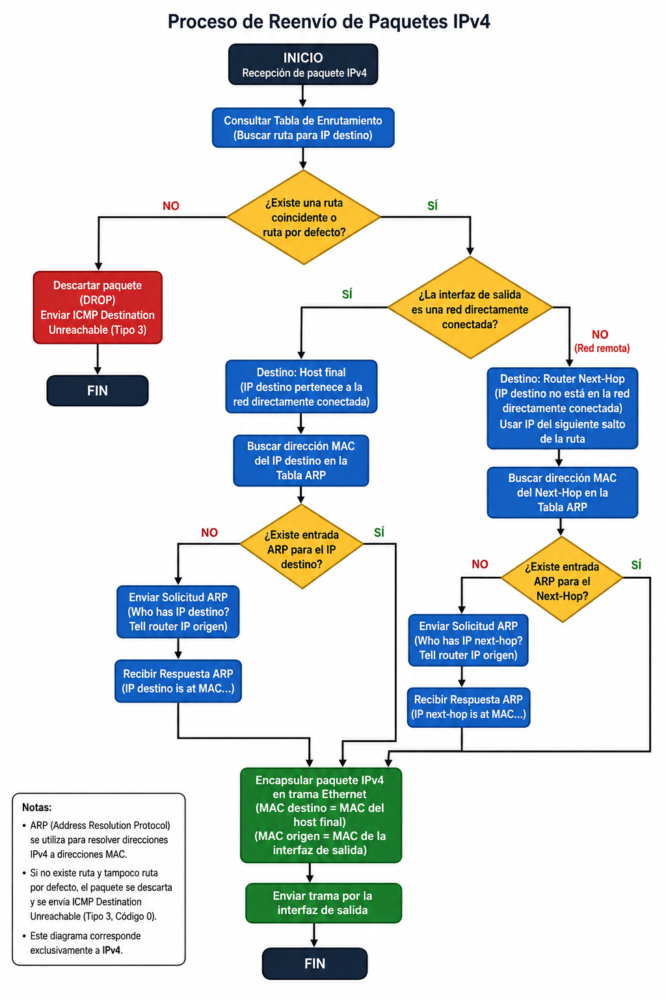
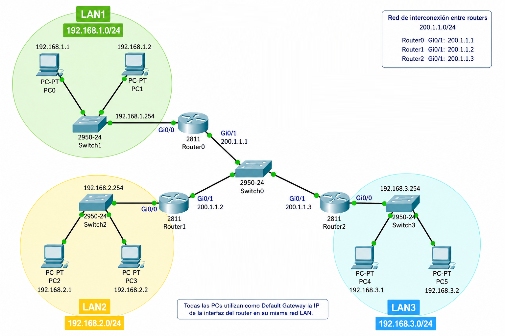

Clase V - Objetivos
1. Trabajo Práctico N°5
Ver consigna TP N°52. Funcionamiento del Router
1. Router y enrutamiento
2. Tabla de enrutamiento
0.0.0.0/0?

3. Reenvío de paquetes

4. ¿Cómo conecta un Router diferentes redes?
Los routers permiten interconectar diferentes redes IP y decidir por dónde reenviar cada paquete. En este ejemplo, el router conecta tres redes LAN independientes y utiliza su tabla de enrutamiento para determinar la interfaz de salida correspondiente a cada red destino.
Topología Ejemplo
Analicemos la siguiente topología, en la que tres redes LAN diferentes se encuentran interconectadas mediante routers.

5. Configuración Básica de un Router Cisco
Acceder al modo privilegiado y al modo de configuración global:
Router> enable Router# configure terminal Router(config)#
Configurar el nombre:
Router(config)#hostname Router_CBA Router_CBA(config)#
Configurar contraseña de acceso al modo privilegiado:
Router_CBA(config)#enable secret redes2 Router_CBA(config)# Router_CBA(config)#end Router_CBA# Router_CBA#disable Router_CBA>enable Password:
Configuración de las interfaces:
Router_CBA#configure terminal Router_CBA(config)#interface FastEthernet 0/0 Router_CBA(config-if)#ip address 192.168.10.1 255.255.255.0 Router_CBA(config-if)#no shutdown %LINK-5-CHANGED: Interface FastEthernet0/0, changed state to up Router_CBA(config-if)#exit Router_CBA(config)#
Verificación del Router:
Router_CBA#show ip interface brief Router_CBA#show ip route
Resumen de la clase
En esta clase aprendimos cómo funcionan los routers y cómo permiten interconectar diferentes redes IP. Analizamos la tabla de enrutamiento, las redes directamente conectadas y el proceso de reenvío de paquetes. También realizamos una configuración básica de un router Cisco y verificamos sus interfaces y rutas mediante la CLI.
← Volver al inicio